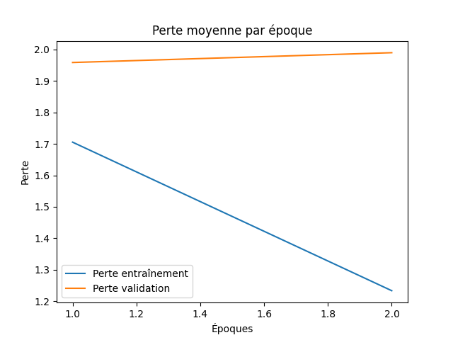
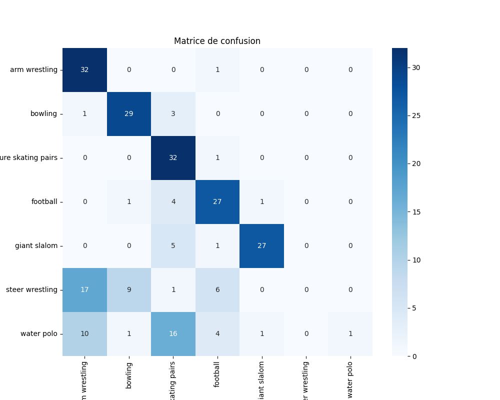
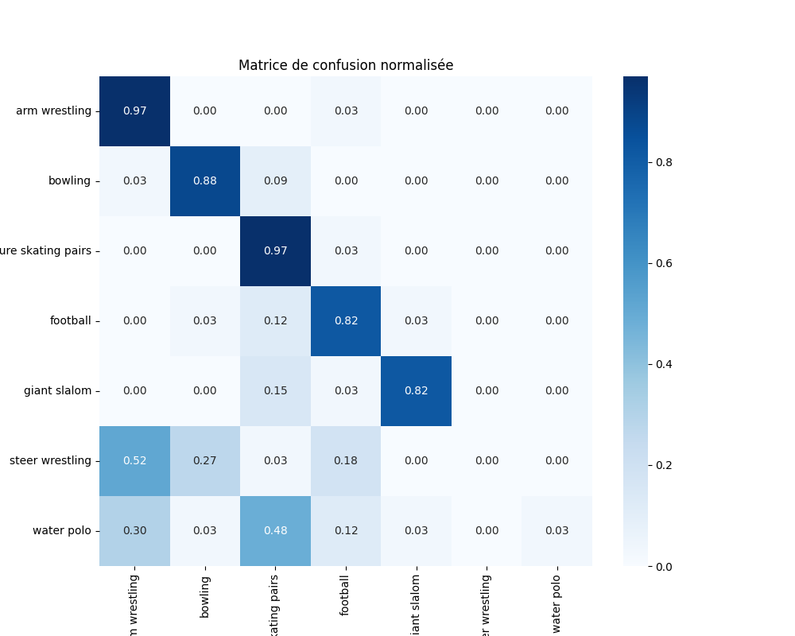
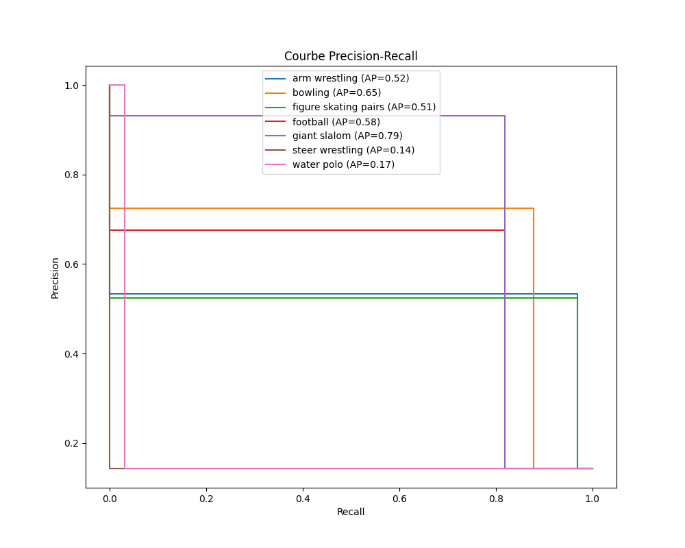

Rapport d'Évaluation du Modèle
Métriques
{
"accuracy": 0.6406926406926406,
"precision_weighted": 0.6269939971466258,
"recall_weighted": 0.6406926406926406,
"f1_score_weighted": 0.5475801362186077,
"cohen_kappa": 0.5808080808080809,
"mcc": 0.6061176497433585,
"classification_report": {
"arm wrestling": {
"precision": 0.5333333333333333,
"recall": 0.9696969696969697,
"f1-score": 0.6881720430107527,
"support": 33.0
},
"bowling": {
"precision": 0.725,
"recall": 0.8787878787878788,
"f1-score": 0.7945205479452054,
"support": 33.0
},
"figure skating pairs": {
"precision": 0.5245901639344263,
"recall": 0.9696969696969697,
"f1-score": 0.6808510638297872,
"support": 33.0
},
"football": {
"precision": 0.675,
"recall": 0.8181818181818182,
"f1-score": 0.7397260273972602,
"support": 33.0
},
"giant slalom": {
"precision": 0.9310344827586207,
"recall": 0.8181818181818182,
"f1-score": 0.8709677419354839,
"support": 33.0
},
"steer wrestling": {
"precision": 0.0,
"recall": 0.0,
"f1-score": 0.0,
"support": 33.0
},
"water polo": {
"precision": 1.0,
"recall": 0.030303030303030304,
"f1-score": 0.058823529411764705,
"support": 33.0
},
"accuracy": 0.6406926406926406,
"macro avg": {
"precision": 0.6269939971466256,
"recall": 0.6406926406926408,
"f1-score": 0.5475801362186077,
"support": 231.0
},
"weighted avg": {
"precision": 0.6269939971466258,
"recall": 0.6406926406926406,
"f1-score": 0.5475801362186077,
"support": 231.0
}
}
}
Loss Curve.Png

Confusion Matrix.Png

Normalized Confusion Matrix.Png

Precision Recall Curves.Png
